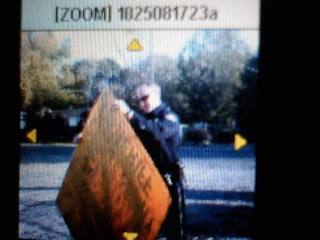
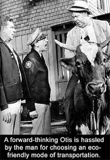

That's how they roll in Homedale: Reserve Officer Antonucci of the Homedale Police Department, acting on a petty, bogus complaint from Deputy Daryl Crandall, seizes a campaign sign from the front yard of city resident Tony Lopez. Once a supporter of Crandall, Lopez changed his mind and altered the sign -- which had been given to him as personal property -- to reflect that fact. Crandall filed a complaint alleging that the alteration constituted "malicious injury to property," a charge carrying a maximum penalty of a year in jail and a $1,000 fine. (Photo courtesy of Tony Lopez)
[This is the second of a series of articles triggered by the incident recorded in the photograph above -- the attempt to punish a law-abiding resident of a small Idaho town for displaying a campaign sign that offended an active-duty deputy who is running for the position of County Sheriff. This installment looks into the troubled background of that candidate, Daryl Crandall.]
Molly King met Daryl Crandall in May 2000 in the worst possible circumstances.
Both of them were residents of the microscopically small community of Banks, Oregon. She was president of the local Homeowners' Association; he was Chief of the town's three-man police department. And he had been sent with a sealed warrant for her arrest on a charge of felony theft.
"I was a single mother of four children," King recalled to Pro Libertate. "I was unemployed for a while, and facing foreclosure, so I filed for unemployment benefits. After I got a job I continued to draw benefits for a little while. As it happens, I was caught through a random audit, and so I was indicted. I'd seen Daryl around town, and we knew each other slightly, so he was very casual when he came to arrest me. But that was why he was there, and that's how we really met."
When she was informed of the purpose of the visit, Molly made an unusual request. Her father was recovering from a serious accident, and a family celebration was planned for that weekend in Las Vegas. She asked if it would be all right for her to go to Vegas for the family gathering, and then arrange for her arrest when she returned.
Despite the fact that he was aiding the flight of an indicted felon, Crandall agreed. In fact, as Molly recalls the event, Crandall flatly told her that he wouldn't arrest her.
"I didn't ask [for this], as I really thought there was no way on God's green earth a cop would do such a thing," Molly insists. "Absolutely I was distraught and upset but I never asked to not be arrested. That was something Mr. Crandall volunteered to me. He told me he wasn't going to arrest me - `Just take care of it right away when you get back.' Which is what I did."
According to Molly, this would not be the last time Daryl Crandall set aside the law on her behalf.
True to her word, Molly turned herself in once she was back from Vegas. She was convicted of class "C" felony theft and sentenced to restitution: This meant that she was on probation until she repaid the State of Oregon $4400 in welfare benefits.
In short order, Molly and Daryl began living together. This happened before Crandall had finalized his divorce from his first wife, Pam. By making this arrangement Crandall not only displayed bad moral judgment, he violated the terms of conduct for his position as a police chief, which specified that he could not associate with convicted felons.
Daryl and Molly were together until May 2003, when Crandall -- at the urging of a City Council member -- resigned as Police Chief in order to avoid being fired.
City officials accused Crandall of misappropriating municipal funds and misusing city property; Crandall has dismissed the matter as a dispute arising from a the machinations of a disgruntled subordinate.
Daryl persuaded Molly to accompany him back to Idaho, and the couple took up residence in an RV outside Middleton in July 2003. Crandall was able to get a job with as head of security at the Boise Town Square shopping mall.
"He complained constantly about that job," Molly told me during a telephone interview. "I'd hear at length and in detail how much he hated what he was doing, and how badly everybody who worked with him was treating him." Thus it was an act of mercy when this exercise in occupational strife ended in December 2003.
Hey, where are the sign police now? This anti-Crandall campaign sign made by Tony Lopez has been defaced by graffiti. Curiously -- or, rather, not -- neither Crandall nor his clique on the Homedale PD has been zealous to apprehend this malicious vandal.

In the course of a year, Daryl Crandall had managed to lose two jobs in law enforcement, assuming that shopping mall rent-a-cops belong in that category.
Yet this individual, whose Peter Principle ceiling was the the exalted station of shopping mall cop, was able to arrange employment with the Owyhee County Sheriff's Office in early 2004. How was this possible?
I posed that question to a second source who has examined Crandall's background in detail. "Well, Owyhee County is a very thinly populated rural territory, and the Sheriff's Office doesn't pay that well," he told me. "It's not like they've got a lot of people applying for the deputy positions, and sometimes they just have to take what they get."
The second source, who served as a police officer in Idaho for more than a quarter-century, points out that the Owyhee County Sheriff's Office (OCSO), like the Banks, Oregon police department and most other law enforcement bodies, has a code of conduct forbidding officers to associate with convicted felons. Yet Crandall continued to live together with Molly after he was hired by the OCSO.
Among the items of paperwork Molly can produce to corroborate her testimony is a lease the two of them signed on a rental property.
Crandall would eventually move out and leave Molly to pay the lease off by herself; assuming the statute of limitations hasn't expired, she intends to pursue a small claims action against him at the earliest opportunity.
Hanging out with
a convicted felon:
Daryl Crandall, as photographed during an excursion
in an OCSO-owned
pickup truck
by Molly King,
the felon in question.
(Photo courtesty of Molly King)
a convicted felon:
Daryl Crandall, as photographed during an excursion
in an OCSO-owned
pickup truck
by Molly King,
the felon in question.
Prior to that rupture, Daryl and Molly seemed to get along, even though she had substantial and growing misgivings about his character.
"When I met Daryl, I thought he was an attractive, charming, ethical man," she explained to me. "For a long time I sympathized with him over the problems he was having at work. Back in Banks, both he and I had some problems with the Mayor, so when he lost that job, I thought he might have been the victim of office politics. When he lost the [mall security] job, I once again believed that he had been treated badly, and was glad when he was hired out at Owyhee."
To get the job at the OCSO, however, Crandall had to pass a polygraph test that would ask some fairly detailed questions about his background. Molly claims that he was quite concerned about inquiries regarding criminal behavior. She recounts helping him to download from the Web and publish an entire book describing how to fool a polygraph test. (In the interest of candor, I must admit that I consider the polygraph to be just a little less scientifically plausible than a Ouija board.)
Good times: Daryl Crandall, out for a pleasant expedition on an OCSO-owned ATV. (Photo courtesy of Molly King.)

Once he had been hired by the OCSO, Crandall made an interesting prediction to Molly: As she tells it, immediately after being taken on as a deputy he told her that within five years, he'd be the Sheriff.
Within a few months, that prospect began to worry Molly.
"There were several times he tried to get me involved in illegal activities," she attests. "There were times he'd bring home confiscated drugs, or confiscated alcohol, and just left it sitting there in the house. One day, for instance, he brought home a paper sack that was stapled shut with an `evidence' tag on it. He told me it was marijuana, and asked me if I wanted to smoke it or sell it. I couldn't believe it: Here I am, a convicted felon, and this guy who's a deputy is inviting me to commit a drug offense. Not only did I say `no,' I said -- please excuse me -- `Oh, f*** no!'"
Molly also claims to have seen Crandall consuming alcohol that was seized from minors during kegger raids. She describes many instances in which she was taken on ride-alongs in the passenger seat of OCSO vehicles, a practice not permitted for non-department personnel even when they, unlike Molly, have no felony convictions. She asserts that he routinely misused County funds to purchase gasoline for his personal use.
As he became more entrenched in the OCSO, Crandall became more arrogant, at least as he was perceived by his paramour.
"He seemed to think that he was untouchable, and yet at the same time there was this constant sense of victimhood, these continuing complaints that the whole world was mistreating him," Molly recalled.
Stipulating that I don't know Daryl Crandall, I'm constrained to point out that Molly's description of his personality comports with what I'd expect from someone who would file a criminal complaint against someone who displayed a sign opposing his candidacy for sheriff.
Not long before she broke up with Crandall, Molly was along for a ride on a summer evening when they came across an ancient, battered vehicle parked at the side of a rural road. Inside the car was a man she describes as being on the far side of the Biblical threescore-and-ten, who was sleeping in the front seat.
Crandall approached the car. After finding the ancient tatterdemalion to be drunk and helpless, he arrested him for DUI -- a charge that made a dubious fit, given that the man hadn't actually been observed operating the vehicle -- cuffed him, and stuffed him in the backseat.
By the most extravagant allowances reasonable people should make, this action may have been defensible, if the intention were to prevent harm from coming to either the intoxicated elderly man or someone with whom he might end up sharing the road.


Not long ago, when peace officers more frequently displayed common sense and were permitted broader discretion, a situation of this sort might have been handled with an exceptionally soft touch: Think of how the fictional-only-in-the-details Sheriff Andy Taylor dealt with Mayberry's resident liver-molester Otis Campbell, and you'll get the general idea.
Molly,who observed the arrest from the front seat of an OCSO vehicle, insists that it appeared to be totally unnecessary, and says that Crandall's conduct was substantially less than professional.
"He really loved the soundtrack to the movie `O Brother, Where Art Thou?'" Molly relates. "So when we had this poor guy in the backseat [of the OCSO vehicle], he turned to the old fellow and said, `Hey, guess what song you'll be singing tonight?' Then he turned on the stereo and played `In the Jailhouse Now,' and sang along with it the whole way into town. He really humiliated that poor guy."
From the account provided by my second source, a private investigator who has collected a substantial dossier on Crandall at the behest of concerned Owyhee County citizens, the incident Molly describes is not atypical of the would-be Sheriff's law enforcement career, a subject Crandall has done his best to swaddle in an impenetrable blanket of non-disclosure.
Crandall has stolidly refused to answer questions from the press about his personal or professional background. Proving that he is tone-deaf to irony, he has waged his campaign on the theme of improving communications between the sheriff's office and the residents of Owyhee County.
On October 29, he published a paid advertisement in the Owyhee Avalanche -- a weekly newspaper published in Homedale -- condemning critics who have supposedly circulated untruths about his family life and background. The ad included a telephone number and an invitation for people to call and discuss such matters with him. Calls made by both myself and some associates were recorded on an answering machine.
This is in keeping with Crandall's performance during the entire campaign: He has never answered a single question regarding his personal history as a law enforcement officer. And since personnel files are purged after ten years, it's exceptionally difficult to reconstruct work histories. The private investigator, who did his considerable best to accomplish that task, sketched out a troubling portrait during a long interview in his home on October 31.
Crandall graduated from High School in 1981, served in the US Navy, and graduated from the Idaho Peace Officers Standards and Training academy (I-POST) in 1987. His first documentable position was with the Blaine County Sheriff's Department; it lasted a matter of months before he was fired for unnecessarily beating a suspect with a pair of sap gloves (which are weighted with steel shot and augment a punch much more effectively than a pair of brass knuckles).
He was briefly employed by the Homedale police before "being asked to leave." His next stop was with the Canyon County Sheriff's Office, where he worked in the jail. Either through an oversight or by way of deliberate provocation, Crandall left a mop where it could be used as a weapon, and one inmate ended up beating another one nearly to death. This resulted in a lawsuit against Canyon County (Zamora v. George Nurse), and in Crandall again being "asked to leave."
Crandall turned up in Hailey, Idaho, and then in Glenns Ferry, his hometown. After migrating to Idaho City in the early 1990s, he got a job on the force only to lose it after an incident in which he attacked a citizen -- not a criminal suspect, mind you, but a citizen with whom he was having an argument -- with a stun gun. This led to Crandall "being run out of town," as the private investigator put it.
Eventually Crandall ended up in Banks, Oregon, starting as an officer in 1998 and becoming chief of the three-man unit in 2001. His sudden resignation-ahead-of-firing in May 2003, according to this source, was centered in a scandal involving the department's petty cash. At the time Crandall was chief, his signature was sufficient to gain access to the petty cash; when an audit found a shortfall of about $10,000, that policy was changed, and Crandall was asked to leave.
That brought Crandall -- with Molly in tow -- back to Idaho, where he is now offering himself as a gift to the voters of the state's second-largest county.
Once again, the foregoing is more an exercise in forensic pointillism than an effort to construct a photo-realistic portrait of Crandall's law enforcement career -- such as it is. He has -- once again -- been persistently, artlessly evasive about his experience, qualifications, and elements of his personal life that have a bearing on his suitability to serve as the paramount peace officer in Owyhee County.
After he defeated his boss, Sheriff Gary Aman, in a May Republican primary, and persuaded his one-time rival to withdraw from the race, Crandall faced no opposition. Aman was persuaded by hundreds of county residents to stage a write-in campaign, a route that is fraught with difficulties.
There is a legitimate possibility that Crandall could succeed in supplanting his boss, leaving Owyhee County with a Sheriff whose background and demonstrated weaknesses make him unusually compromisable -- by criminal elements that infest the county, certainly, but also, and much more dangerously, by the Feds.

Available now.
Dum spiro, pugno!
71 comments:
By best wishes for your succeess in supplanting your boss.I think this is possible for now:-)
tony lopez cant make up his mind, he told the press that he just thought that the sign was his, but he told you that he tried to give the sign back, by that amdmission he knew that the sign did not belong to him, and he knew better, he used to be in law enforcement. the whole incident was dervied to elicit a reponse from crandall by the aman campaign and it worked. anybody who knows gary aman knows that the allegations made by the ex-wife are crap and shame on her for using it now, none of this crap was out durring the primary, guess it was not importanat when the current sheriff thought he had the election sewn up. have no opinion about who should be sheriff, just want a fair fight and this has been nothing fair. as for crandall not talking to the press,maybe one should look into the close freindship of the tribune editor and the current sheriff, dating back to when she served jail time in owyhee county. also might want to call the owyhee county sheriffs office and see if they sent out two deputied to investigate sign thefts, even accussing a property owner of taking the signs off his own property. more to the story than meets the eye
Hopefully you've submitted this for publication in the local papers (I wouldn't know since I no longer waste my time with them).
Sic Semper Tyrannis
tony lopez has a problem with the truth, did crandall give him the sign, or did crandall refuse to take the sign back.. make perfect sense to me to have a sign the hands of the oppostion and refuse to take it back. as for the ex-wife that is now coming foreord with all this new infroamtion, where was she durring the primary? this was no more than a political stunt that is paying off big time for the aman camp, as for lopez, i hope that aman has not promised him anything for his trouble, becaue if anybody keeps up with the local news they will find that aman is not very good with the thruth. if crandall is such a poor choice for sheriff then aman is worse because he doenst have the common sense to do a background check, but wait they did a background check and aman still doesnt have a clue about what he is talking about. unless you are a rancher in owyhee county you are nothing. so all of you that have lived with your heads under a rock, time to wake up and realize that all of this crap was no more than a publicity stunt
I'm sure we all know mere eloquence and good grammar in writing do not in themselves make truth. No more does poor writing make falsehood. Even a half-wit scribbler who can get a Blogger account should still be able to fight on equal terms if they just took the trouble to line up the facts, instead of spitting out venom. Will, your dissenter here is soiling himself, and I find it highly amusing you play along.
Mr. owyheecountytruth, I regret to inform you that your logic is as infirm as your orthography.
1) The fact that Crandall refused to take back the sign when that offer was made, long before the present dispute, demonstrates incontestably that Crandall had rejected any ownership interest in that copy of a piece of campaign literature. It was the equivalent of a discarded flyer or pamphlet, which its new owner, Tony Lopez, could use as he saw fit.
2) You assert that this entire incident was intended to provoke Crandall, but doesn't this assume that Crandall is the sort of fool who would fall for a trick of this kind?
3)I don't know Gary Aman. I'm mortified that he failed to perform due diligence when he hired Crandall.
4)I haven't contacted Crandall's ex-wife, who may have interesting and relevant details to provide. I interviewed Crandall's ex-mistress/girlfriend, because her account establishes that Crandall repeatedly violated law enforcement policies concerning association between LEOs and convicted felons.
5)Molly King explained to me that she found out about Crandall's candidacy after he won the primary last spring. She has tried to publicize her concerns, only to have the key local media organ, the Idaho Press-Tribune, trivialize her concerns and sit on the story -- which seems to undermine your implied claim that the P-T is biased in favor of Aman over Crandall.
6) You repeatedly insist that the incident involving Tony Lopez was nothing but a "publicity stunt" arranged by Crandall's detractors. But it was Crandall himself who instigated this matter by filing a complaint and calling the police.
Was Crandall involved in a publicity stunt at his own expense? Are his diabolical detractors that clever?
I had the common sense to never marry Daryl Crandall - amen. And as soon as I found out that he was running for Sheriff, I was on the phone calling anyone and everyone I could to share my story. (For the record, I haven't resided in Idaho for over a year. It was an absolute fluke that I heard about Mr. Crandall running for Sheriff roughly 3 months ago.)
Political stunt for the Aman camp? I DON'T EVEN KNOW GARY AMAN.
It makes not one bit of difference to me who is running against Daryl Crandall. The issue is that Mr. Crandall is running for this exalted public office AT ALL.
Anti-Crandall =/= Pro-Aman. But if you need to believe that in order to sleep at night, to justify your allegiance to a man seeping with corruption - that's your conscience, not mine. Roll with it.
There is always more to the story than meets the eye, Truth. You might want to heed your own words and put that in perspective when it comes to Mr. Crandall.
with all due respect to you, you are wrong, Crandall was never contacted by lopez to come and get the sign, but you will argue how do i know, just as i argure how you would know. i am sorry, I was talking about the ex-girlfriend in my comments, and you need not check very hard to find out that the press tribune snorted around in crandalls past extensivley, often times with their parnter in crime, the owyhee avalanche.
how do you figure that crandall instigated the situation? Did crandall paint his own sign and place it in lopez's yard? why would crandall want to allow a sign that cost a considerable amout of money that could be used some place else?
as for lopez's comments about the police campaining on duty, put up or shut up, just an excuse to campaign for the other side.
the fact of the matter is that Lopez destroyed property of another with malicious intent. the paint can not be taken off of the sign and is no longer usable for it's intended purpose. the act was completed with premeditation and malice. Lopez claims that he did not know it was a crime, but the court system is full of people ignorant of the law, and as a attorney, I am sure that you will agree, they do not have a valid defense.
I will admitt that i am not the smartest person that you have ever talked with, but i do know the difference between right and wrong, and no matter which side you take on the matter, wrong is wrong.
as for broken
the local media has been given so much fact about this campaign, for example, Gary Aman made a video interview with the press tribune and openly stated with cohersion, that Crandall had worked for 18 or 19 police department and that was a red flag. when it was proved to the press that Gary had not told the truth about his statement, the press tribune took the video off of the web site. when asked about the press tribune stated that Gary had " misstated " the facts. there are numerous inconsistancies with Aman, but nobody cares about them. Sorry I did not mean to "soil" myself, I just thought that maybe some would like to hear more about what is going on.
molly,
Why on gods great earth have you not gone to anybody about theses felonious activities before now? why did you wait until you heard that he was running for sheriff. why not say something when he brought home pot? you have made allegations that would put crandall in prison fro years. as for my concious, it is clear.
your story is a good peice for the state police or the attorney generals office.
Daryl Crandall threatened me and my family, in writing no less.
I contacted Daryl in April 2005 via a demand letter, sent to his Post Office Box in Bruneau. I was demanding $3500 (repayment for his portion of the lease that he "stuck" me with) and to have my personal property (which he "removed" from my garage after we broke up without my permission or knowledge) returned to me. I told him that I was going to pursue him in small claims court for recovery, which was my right.
He sent me back a letter stating to me that if I tried to sue him, he would "ruin" me. He told me that he would call my employer and tell them about my felony. He told me he had all the access to the national crime system that he wanted and no matter where I went, he would find me and try to harm me.
At the time, I was working for a company in Boise. My employer was not aware of my felony conviction. You can say I lied by omission and I will accept that, however the facts are thus: my employment application did not ask me if I had a criminal background, nor did my employer during my interview. Obviously, it was information that I did not voluntarily provide during either. This was the "ace in the hole" that Daryl held over my head.
Interestingly enough, I lost my job because of this crime the following month in May. My final restitution payment had been returned by my bank (a $2500 check that I could not cover by $10). A warrant was issue for my arrest for failure to fulfill the obligations of my probation in Idaho and I was arrested. I was exonerated of this crime a few weeks following my arrest, my commitment of restitution fulfilled and my probation, over.
By that time, I simply didn't want any additional contact with Mr. Crandall - after being threatened by him, I just wanted to be completely left alone, a blip in his history.
I've spoken to Mr. Crandall twice since then. Once when he wanted a reference from our former landlord about what a great tenant he was, how responsible he was with paying the rent. I laughed at him on the phone as I told him he never paid rent once in that house - "thanks again for screwing me on the lease!" - click.
The last time I spoke to him was a year ago, when I was preparing to leave Idaho. I was packing and found a picture that I knew he wanted as he had looked for it many times since we moved from Oregon. I had found it. (It was a professional picture of him with his daughter when she was an infant.) I called him and asked for his address so I could be decent and return it to him. He wanted to engage me in chit-chat but again, I merely hung up on him.
To answer your question, and I apologize for being long-winded, in light of his attempt to run for Sheriff, and perhaps win, I have been working numerous contacts, trying to ascertain who I need to speak to in order to pass along the information and documentation in my possession regarding Mr. Crandall and his activities.
In closing, I must be forthright and admit to all that I, myself, have threatened Mr. Crandall in return. During our second to last phone conversation - when he wanted a reference - I told him, without reservation or concern, that if I ever found out he was running for Sheriff, I would do everything I could to prevent it.
I am keeping to my word.
If this petty tyrant gets into office, expect him to act exactly as he has historically, with no remorse. The rights of the citizens within his jurisdiction are in peril. His election to office would be a muff punch to an already prostrate blind justice.
negatore
If Crandall does manage to threaten and intimidate his way into office, he won't be there long. Crandall is a petty tyrant and a criminal. He will either leave office in handcuffs, or will be forced to resign due to public outcry. A Crandall run Sheriff's office will suffer from an unprecedented lack of respect from the public. He and his officers will be the subject of ridicule and derision. For the benefit of "owyheecountytruth", allow me to translate: Crandall is a thug who is not fit to be a cop. Under his leadership, the Owyhee County Sheriff's office will be the laughing stock of Idaho.
Dear truth,
since everyone here has revealed who they are in relation to this case, how about you do the same? you sound like: one of the deputies; a PI crandall has hired; or crandall himself blogging here trying to find out who knows what is his community so that you can later go after them.
you sure do seem to know a lot, but seem to be trying to fill in the gaps.
lastly, how can you call altering a sign on one's own property malicious? if lopez had defaced a bumper sticker crandall had given him, and paid for, would that be malicious?
rick
for the anon:
owyhee county is already the laughing stock, but thank-you for taking it a new level and making a personal attack on my intelligence. i am glad that my opinion means so little to all of those who read these posts and god forbid that somebody should say anything that steps outside of what you feel is right. there are many who beleive that the current sheriff and his select crew are corrupt, but i dont imagine that it will warrant any kind of attention from the politically savy likes of you. i would tell you to kiss my ass, but you would probably have to get you socially elite to redneck dictionary out to see what i just said. your opinion is not above me, just below me.
owyheecountytruth ....
Based on your emotionally laced and disjointed comments which lack in facts, all the while accusing Mr. Griggs and Ms. King of same ... are we perhaps being honored by the presence of Mr. Crandall, incognito?
Either you are him, are sleeping with him, are hoping to get something for supporting him, or are otherwise desperate for your nice little Mayberry bubble to remain intact--or at least that is how you appear in these postings.
If none of this is true, you do a disservice to the man you aim to support.
Mr. Grigg,
You are obviously one of the smartest men I don't have the pleasure of knowing. But why do you call it a "Fact" that Crandall refused to take his sign back from Lopez. Did you also get roped into this story as I and several others did? I don't believe Crandall could have signed a citation against Lopez if he had indeed given him the property. What is your evidence to call this "Fact"? This seems like a decent way to get opinions out there and I am glad I found this website, but is "Fact" a way of just saying, "I'm taking the side of what appears to be a man persecuted by police and government corruption. So If he says it, it must be fact?"
I know the resources the oposition to Crandall has and how far they have gone to find "Dirt". I also know the Owyhee Avalanche and the Idaho Press Tribune have refused Aman "Dirt". You and the rest of the media can rip anybody apart you choose to. Crandall won the primary by fighting this before and I feel even with the stunt of Tony Lopez, he will win again.
As for "Anonymous",
Intimidate his way to the office? How about Aman going to Owyhee County Commissioners (confirmed by conversation with a current commisstioner) and convincing a policy to be passed that he can fire an employee for running against him in an election? And him hiding behind this policy on at least 2 occasions? And him publicly saying he had nothing to do with passing the policy?
How about a letter posessed by a local person from Gary Aman telling a small child that his dad "Misunderstood" him when Aman was telling him he would hang him? This was over an ATV incident.
And it is like Gary Aman to tell the voters (residents of his county) they were wrong so he will give them a second chance to vote for him.
The Owyhee County Sheriff's Office is already the laughing stock of Idaho. What are the current lawsuits and investigations against the Owyhee County Sheriff's Office about? What or Who caused them? What are the outcomes or pending outcomes? More than meets the eye.
i am not crandall, nor am i sleeping with him and do not beleive that i have spoke ill of mr. grigg, by his own admission, he does not know aman and i was trying to give him more information, so that maybe he could make a somewhat informed decision about the total situation.I was trying to be very civil but i am the one who has been insulted by other bloggers. you accuse me of not having any facts, but yet you have put nothing on the table that lay creedance to anything you have said. I told molly what she needed to do to report the aggresious violations that she has alledged. I would hope that my identity would not be an issue, but the truth is a dangerous weapons, both for those who have it and those who dont want it known. you alledge that i am doing a disservice, and i think that i am doing quite the contrary, giving another side of the story. until i started blogging, this was a aman/lopez love fest.
Mick,
Why are you using emotions to attack another user using emotions? Don't make a big deal about politics being emotional. You, I, Mr. Grigg, owyheecoutnytruth, broken and anonymous use emotion to explain sides to a story. There are two candidates and enough can be dug on both. Just one candidate appears to have more media connections than another. The Tony Lopez incident is unfortunate and I am very curious what the outcome will be when all said and done. A former deputy vs. a current deputy about a criminal issue. Interresting. I wonder if the reason Lopez is not a deputy anymore is as interresting as this. Does anybody know why he was either fired or did he resign and why? I only hear things so I don't want to comment on that.
Lets try to stay on the basics of this particular blog... Tony Lopez/Daryl Crandall sign incident. There is probably a lot of insightful information going to be released on both when this is all said and done.
Mr. Grigg, Have you looked into anything else about Lopez or Aman yet? On a better note... This will all be forgotten and left in the past after Tuesday (or at least should be).
Sorry, its not taking my password so I published this anonymous whatisthetruth35
truth,
this is just me talking...
if you were trying to provide more information, your approach definitely worked against you.
you make some valid points, but i think will addressed your concerns with some substantiated facts.
lastly, i think this all boils down to what your opinion is concerning private property--where it begins and where it ends, and the concept of private property generally held by those who read this blog.
without reconciling this one issue, i don't think we can ever agree, because the charges in this case depend on the concept of private property, and how crandall has decided to apply the law to his situation. i seriously don't think he has a leg to stand on. and his behavior to this point, and his past history, leads me to believe that he's a dangerous man who cannot be trusted with authority.
rick
For a local DA and Judge to take
this case to trial, Crandall either
made some quick buddies or Lopez
already had enemies.
Either way, the system is a ass.
People who use it unjustly are ass-holes.
Woe unto you, unjust Judges.
"this was a aman/lopez love fest."
For me this has nothing to do with loving Lopez or Aman. It is about loving your neighbor no matter who it is.
No one should be treated the way Lopez was treated.
It is clear to me that he was treated to the ticket that could be $1000.00 or a year in jail because of his political speech. If Crandall had called the local bully cops out of true concern for the usability of the sign, it seems he would have requested it back or called the Homedale cops when Lopez was using it to change the oil in his car.
Mick,
I completely agree with you that this case does boil down to a property dispute. And, I would like to see this go to trial since I have not seen caselaw regarding a campaign sign. The only other thing I can say is so far we have gotten one side of the story and not the other. It will be interresting all-around to be in the courtroom and hear both sides.
"...so far we have gotten one side of the story and not the other. It will be interresting all-around to be in the courtroom and hear both sides."
Only one side has been talking; the other side has preferred to deal in implicit violence (e.g., calling in armed men to harass a private citizen over a campaign sign), threats, and abuse of purported authority, while arrogantly refusing to answer even the most basic questions about his qualifications and background.
Chances are that Mr. Crandall's support draws heavily from among people who insist that Barack Obama's enigmatic background and vapid invocation of the virtue of "change" make him unsuitable for the office he seeks.
While agreeing that Obama would be a disaster as president, I have to say that Crandall's approach to campaigning has been more or less identical to Obama's in some important respects.
buffalo_girl said:
After an excruciating day substituting as a special ed teacher's assistant in an upper Midwest rural high school, it is essential to be able to put one's feet up and have a good 'read' over a bowl of popcorn.
I am one of the half-wits I was referring to earlier. It just happens my half of wit makes me able to write.
Let's see: I could run for sheriff in my state. I have some years' experience in police work, and I can buy or make my own campaign signs.
But I don't take myself that seriously. Does my opponent want some dirt? I'll supply a much better pile to dig from, and I'll be glad to give him/her a couple of signs to modify. Part of my campaign would be making sure a full account of my biography is available, warts and all. There are some stupid mistakes in my background, and hiding them is even stupider. A key element in my campaign would be letting folks know I feel bad enough about the harm I've done to others I would be pretty careful about harming anyone else, either by action or inaction.
Aman and Lopez have had their say; where's Crandall? I'd love to hear his side.
Taking what facts I can see so far, neither Crandall nor Aman are actually qualified. Seems to me our current presidential campaign also features a race between a pool of sewage and a pile of manure. God help our nation, and God help Owyhee County.
this has nothing to do with freedom of speech rights, the man has a homemade sign in his yard with a floodlight on it, and is well within his rights to do so. the fact of the matter is that he defaced property that belongs to another, and yes it is correct that the court will decide true ownership. crandall has replaced well over a 100 signs that have been stolen, destryoed or defaced. lopez instigated the media attention by saying that it was free speech, but he has never been challenged on his message, which he should not be, but why should crandall not have the right to protect what he believes to be his property. it is very difficult for any of us to know what conversations the two had about the sign if they had any at all. the freedom of speech issue was not breached here, it is nothing more than a property dispute and it is sad that it has turned into the lopez v. crandall v. aman issue. I find great disgust in the fact i have sunk to levels of insulting other people on this site for having a opinion and embarrassed by the fact that i let personal feelings get in the way of common sense. i hope that people go to the polls today, and vote with thier hearts and minds and good luck to all who ran.
I'm confused. I understand Daryl Crandall and his supporters claim they have had numerous signs defaced and/or stolen. If a Daryl Crandall sign is placed in front of someone's house and that someone does not support Crandall and uproots the sign does that constitute vandalism and theft? I certainly hope not! If someone places a sign in front of my property that doesn't reflect my sentiments, I believe I have the right to remove it.
I know Crandall's supporters have been placing his campaign signs in front of peoples' properties without permission and those people have been removing them. . .now the Crandall campaign is crying foul?
Some people seem to whine no matter "whose kids have the measles."
May God help us! We need people of integrity to serve the people in government.
Have you prayed for those in authority today?
i was trying to be nice, why would you allow someone to place a sign in your yard if you dont support them, if they place a sign in front of your property in public right of way, you do not have the right to remove it. if a sign is placed in your yard without permission, then its littering,but remeber that if a campaign sign is placed in pulic right of way supoporting your choice, then by state code, you can not block or hinder another candidate from putting up their sign. is this wahat this is coming down to, is this the biggest thing that we have to worry about is signs,,,,then we are really screwed. i will say again THE SIGN THAT LOPEZ DAMAGED WAS THE PROPERTY OF THE CANDIATE, IF LOPEZ DID NOT TO SUPPORT HIM ANY MORE HE SHOULD HAVE GIVEN THE SIGN BACK. A CHECK WITH THE CANDIDATE AND HIS CAMPIAGN SHOWS THAT THERE WERE NO ATTEMPTS MADE BY LOPEZ TO RETURN THE SIGN. LISTEN TO ALL OF THE INTERVIEWS WITH LOPEZ, HIS STORY CHANGES TO RELECT THE SENIMENT OF THE INTERVIEWER. I AM EXTRMELEY GLAD THAT THERE ARE PEOPLE OUT HERE THAT ARE WILLING TO CHAMPION FOR THE UNDERDOG, BUT YOU ARE BETTING ON LAME HORSE HERE. LOPEZ IS NOT ETHICAL OR MORAL AND HIS INTENTION IS TO MUDDY UP A ALREADY CONTENTIOUS RACE. LOPEZ'S RIGHTS TO FREE SPEECH WERE NEVER IMPEEDED AS EVIDENCED BY HIS ABILTY TO DRUM UP SIGNIFIGANT MEDAI COVERAGE FOR SUCH A JUVENILE ACT. IF YOU DONT LIKE CRANDALL, THAT IS YOUR CHOICE, BUT DONT GET CAUGHT UP IN THE FACT THAT EVERYBODY WANTS TO MAKE HIM A BULLY, LOPEZ IS MAKING HIM THE BULLY BY MAKING HIMSELF A MARTOR. IF YOU WANT TO SEE THIS ISSUE DISSAPPEAR AND GO AWAY, THEN LETS QUIT TALKING ABOUT IT,
Attention, Mr. Anonymous -- the one who just posted a purported message for Jay Lopez:
This moderated forum does have a few rules of decorum, one of which is that it is impermissible to use the kind of language you employed in describing Tony Lopez while cowering in anonymity.
If you want to use that language, I'll grant that concession, but man up and use your real name. If you don't have the dangling anatomy to do that much, don't bother posting here.
Mr. Truth, you've lapsed into complete aphasia, if not outright psychosis.
What made this incident irresistible to the media was Crandall's gratuitous use of armed violence -- that is, calling his buds on the local police force to deal with a matter that could easily have been resolved privately, assuming that Crandall had a valid grudge (which he almost certainly didn't).
At no point in this controversy has Mr. Lopez done anything comparable to this. He has threatened nobody, bullied nobody, and behaved with admirable restraint.
Nobody "made" Crandall behave like a bully; his conduct here speaks for itself.
If this is some kind of sophisticated psy-op dirty trick against Crandall, we would still be left with the fact that the "trick" would only work if Crandall were the kind of self-absorbed boob who would rise to that kind of boob-bait.
well will, your true colors are shining through now, LOPEZ broke the law and it would now appear that you are going to show your true colors. A defense attorney. i have seen other poeple call names in thses post, i beleive one was you. Why are you limiting my free speech now, doesnt that go agaisnt everything that you stand for?
will, have you ever been a vicitm of a crime? have you ever called the law on a neighbor? has mr. Lopez ever called the police on lets say a dog at large? some would say that a dog at large was probably soemthing that two nieghbors could dicsuss without the police invovled, why not ask lopez if he has ever called the police for something so petty, course if the dog ended up in lopez's yard he probably just paint it. you are doing a disservie to the legal system by giving lopez an excuse to break the law. it is people like you and lopez that create the need for laws, because if you feel that you can justify your actions by vilifing another person, than it is your right, by the way, how long did you know lopez before this incident, how long have you known crandall, by the way you speak, you have infinate information on both.......
on 03/09/08, Two sheriffs deputies were sent to invstigate the theft of two yard signs for aman, would you not agree that it was a gratuitious use of power to send two men to investigate such a meaningless crime. My intention was not to get into a war of words with a man who is smarter than me, but if you want to play.....lets get after it, because its easy to fish for idiots when you use the right bait.
how has crandall threatened anybody?
Disclaimer: I have no personal interest in this drama other than as an observer and a reader of Mr. Griggs--I do not live near nor know any of the involved. I am interested in that I've lived in small towns, and otherwise, and this story is certainly within the realms of possibility of corruption and manipulation within local law enforcement as I have witnessed and/or experienced it.
I simply made a comment based on assessment of writing style and desired objection.
The object of OCT was to propose "the other side of the story". What he/she did was refute Mr. Griggs assessment of the story sans any additional or relevant facts. Given the handle used, I'd say OCT is much more emotionally involved than I. Also given the continual rebuttals (also sans additional or refuting facts to Mr. Griggs and Ms. Kings very organized replies), I am making a psychological assessment, based on OCT's writing style only.
And again state: if OCT's (and others) goal is to support Mr. Crandall's side of the story, then they are doing so in a manner that appears to be nothing but standard, hot-headed internet courage. You live there, you believe in this, fine...tell us who you are and why you are interested that we see the other side.
What I'm seeing from the other side is irrationality. Even if the irrational is right...it does not come across so in text because you do not support your statements with anything but your opinion--in direct contrast to Mr. Griggs' documented support--find a better way to do it, if you are indeed right.
Attacks on me personally appear to be simply in return for my questioning the messenger as to the comprehensibility of his message as it was relayed. I am not shooting the messenger, I am asking him or her to be more clear which is entirely within the rules of fairness. For the others who replied to me, go back and make sure you are accusing the right individual of the right comments.
I'm with buffalo_girl. This is great popcorn eatin', Jerry Springer type stuff.
Will, I think outright psychosis is the proper diagnosis for Mr. Truth's affliction.
R. Cozine
you are all right, i do know more than you about this incident. i have knowledge that i can not share nor can i give my name in fear of retribution,not only for myself, but for my family as well.
you all have the luxary of what you get to read here as fact, but I know more about lopez than you will ever know, or probably care to know,
my intent is not to persoanlly insult anybody, but i am easily led off of the path of humility and i rather enjoy " heated discussion" as we have had in the last couple of days, and although you think that I am nuts, you still keep checking for my responses. I do not have interent courage, I am way more dangerous in person that I am on the computer, and I like long walks on the beach, a good boxing match and I hate ping pong and cotton candy. that is all i can sahre about me.
my point was and still is that Lopez is not honest and he needs to be hels accountable for his actions, actions that just happen to invovle a campain sign, would all of you still be standing beside him had he scrawled his message on the side of building that did not belong to him?
the issue of Crandall V. Aman in the elction is far more detailed and invovled than any of you can imagine, Crandall has been threatened with harm, crandall suppoters have been threatened with police abuse....the only negative effect being is dismissal by the sheriff.
employees are subjected to the tyranical leadership by 1 year cop cheif deputy ( current sheriff stays out of most incidents to ensure plausible deniability )
there are reams of stories about Aman that do not differ much from the ones you tell about crandall, but since he did not sign the citation against a citizen, he is the good guy, the tales of sexual harrassment, police brutality and excessive force are rampant.
as for will, I know you are smart, everybody on here knows you are smart, but I am a smart-ass, an often forgotten talent. nothing persoanl intended
Admittedly, owyheecountytruth is somewhat inarticulate to be sure in being CLEAR and concise on what points he's trying to make exactly and, naturally, arrogant articulate folk will take advantage of that fact, unfortunately.
However, I always try never to disregard/ignore the message, whether emanating from an articulate, maleducated "blueneck" [blue blood] messenger or an inarticulate, maleducated "redneck" messenger. Macht nichts.
There's probably specks of truth mixed with the nonsense as is usually the case with any questionable messenger's message. I certainly have no dog in this hunt so, obviously, I'm not paying any special particular attention to the details in this matter.
That said, it seems odd to me that someone would spend YEARS being intimately involved with this Mr. Crandall, if he was such a bad apple. If Mr. Crandall is rife with lowly character and possesses virtually no integrity, as some of his alleged behavior and recently past actions certainly seem to indicate, according to Will and Ms. King, then that also says a lot about the folk who associated, and presently associate, intimately and closely with the man.
Sorry, I just like playin' "connect-the-dots" too much I reckon.
And Will, I'm sure you're well aware of this pitfall, but I'll say it anyway for effect. I'd be cautious with what dogs (or cats) you choose to lie down comfy with. You'll always be a newfound host for their fleas.
Just sayin'.
Confederate Canine -- Your comments are laden with insight, as always.
With respect to Molly King: I was referred to her as a credible witness by someone of nearly impeccable character and background whose documented findings corroborate key parts of her story.
That being said, it is a good idea to make sure my flea collar remains firmly attached.
nothing that i have professed should considered to be a " speck " of truth, surely jounalistic magantes such as yourselves should find it easy to verify any and all things I have stated in this blog, but it really doesnt matter , casue tomorrow we can all meet back her to exchange recipes for snickerdoodles.
oct
[Homer Simpson voice] MMmmmm, Snickerdoodles....[/Homer Simpson voice]
Just got back from the polling place in my little corner of Owyhee County. The line of people registering to vote was longer than the voting line. As I was waiting, a young man stepped out of the voting booth to verify the correct spelling Mr. Amans name. Chuckling to myself, I thought, perhaps all of us Owyhee County rednecks are not as ignorantly passive as the world seems to believe.
As for myself, I wrote in Aman, only in an attempt to vote AGAINST Crandall and his goon squad from Homedale. I have not agreed with everything that has come from the Aman Administration, however, given what he has to work with, I believe he has done a fair job. I have never been threatened, bullied or in anyway abused by our law enforcement nor was I promised any favor from them for an Aman vote. I simply didn't care to vote for a candidate that hides behind closed doors and refuses to talk to the voters.
I have never been threatened, bullied or in anyway abused by our law enforcement nor was I promised any favor from them for an Aman vote. I simply didn't care to vote for a candidate that hides behind closed doors and refuses to talk to the voters.
This is an eminently sensible summation of this entire matter.
crandall has spent hundreds of hours talking to the voters, just not to the press.
"my point was and still is that Lopez is not honest and he needs to be hels accountable for his actions, actions that just happen to invovle a campain sign, would all of you still be standing beside him had he scrawled his message on the side of building that did not belong to him?"
If the building was abandoned on his property, then yes I would. This sign wasn't left with the intention of retrieving it in a reasonable amount of time. It was placed hoping that it would remain out for days or weeks then be thrown away. Once it left the hand of Crandall or his representative it was no longer the property of the campaign. And that is how I would vote if I were on the jury.
Perhaps. Unfortunately I do not spend that much time in Homedale or Bruneau. Either way, neither he nor any of his campaign workers solicited my support; I don't even recall an open letter to voters being delivered to my mailbox. With that being said, the only other venue I have to collect information is from public resources.
I also live in Owyhee county and have lived here just under a year. A couple things though when reading this blog I’d like to point out. First of all Owyhee County is not the laughing stock of Idaho. I have lived many places in Idaho, Ohio, and California. I respect the sheriffs department here more than any other place I’ve lived. I do have very little respect for the Homedale police force. I am aware that deputies have investigated stolen Aman signs. However, I know for a fact that the investigation of alot of those signs were at the request of the people of who's property they where stolen from. Plus stealing signs is alot different because no matter who the sign belongs to (the candidate or the land owner) the sign was stolen by someone completely different. Yes I’m sure Crandall has had signs stolen as well. With Lopez it’s a matter of who the sign belongs to. If it was Lopez’s sign on his property then it should be his right to do what he did. If it’s Crandall’s sign then Lopez should have to make amends for the sign. Which is what, $20 tops?
As far as Owyheecountytruth. I don't care who you are but you must realize that Crandall and his supporters may have received threats, but I promise you that they have given threats as well. Aman may not have a perfect record and I’m sure there’s things in his past that may be questionable but then again most people have those things. The fact is Aman as been in the department how long? Since he's been in office has the department ever gone over budget? Has the departments services been improved? As far as I’m aware the department under him was able to get better vehicles, improve the pose program, and has also set up a 911 program. Sounds like he's doing pretty well to me.
What has Crandall done? I’m sure by looking at his work history he has a wide collection of name badges. He says that he has years of law enforcement experience. Well ya know what; Denis Rodman has years of experience dressing in woman’s clothing. Doesn’t make him qualified to run for Miss America. Heck, I have years of experience driving, doesn’t mean I should go for the piston cup. Its not simply being in law enforcement that makes you qualified its what you do during that time. Crandall, if you’re out there please tell me. What makes you qualified to handle a county budget and be able to keep the sheriffs office running as it should? Then again I’m sure your’ unavailable for response as usual. This also is a concern. One blog stated that then reason Crandall doesn’t respond is because the press and statesman are against him. Well lets see umm during the presidential election the press hasn’t been kind to McCain at times, but uhh… he’s smart and responds to them when asked, or else he has someone else respond for him. Crandall if you become a sheriff I promise you that there will be times the press comes to you, or the public, wanting a response to something that happened in the department. As a sheriff you can not hide in your office with you thumb in your mouth rocking back and fourth. You have to get out there and confront the public and answer questions. Even to those who hate you.
AD
wow ad, you had better not let the sheriff catch you on the computer. why so little repspect for the homedale cops? from what i can tell there is only one cop that has been named.
On several occasions Homedale police have openly campaigned for Crandall while on duty. This is in violation to state law. County and state employees are not to do campaigning while on the clock. This is one reason I do not respect the Homedale police. I am a tax paying citizen and I am not wanting my taxing going to pay Homdale cops to campaign for someone. I do not work for the county; I don’t even work in Owyhee County. However, I do deal with a lot of employees for our company. If I was running for office and had some co-workers go campaigning for me on company time I promise you that the company would not be happy. What’s the difference here? Homedale citizens make up the company and are basically paying the cops to go campaigning instead of doing there job. That is not right! If you looked through the original post Will did mention that this is the reason that Lopez was also upset. Thus, umm there is more then one Homedale cop mentioned in this incident.
AD
What has Crandall done? I’m sure by looking at his work history he has a wide collection of name badges. He says that he has years of law enforcement experience. Well ya know what; Denis Rodman has years of experience dressing in woman’s clothing. Doesn’t make him qualified to run for Miss America.
now thats funny, if you dont thinkls that funny you just get the hell out of here. lord i apologize, me with all the starving politicians in new hamshire.
hey ad, prove it, and while you are at it, why not look into the documented allegations of uniformed sheriffs deputies strongarming citizens into signing the petition for Aman. How about looking into the allegations that deputies were hand carrying signs for aman in the backs of the county trucks? If you have proof other than Tony Lopez as your source than I might be willing to give it creedance, but you know, lets be fair and make sure that all of the allegations have merit before we assume that they are fact.
Please re-read the original post written by Mr. Grigg to ascertain why I continued my relationship with Mr. Crandall. I'm not being sarcastic by any means - I think Mr. Grigg did a fantastic job conveying my story.
Quick recap:
1. When we were still in Oregon, I believed - based on tainted truths told to me by Mr. Crandall himself (hindsight being 20/20) - that he was the victim of a very bitter ex-wife. I completely believed in and trusted him.
2. It's the crimes and conduct that he has displayed while employed with Owhyee County that disturbed me to the point of terminating our relationship. Had he been so blatantly crooked in Banks, Oregon as he was with OCSO, I wouldn't have dated him in the first place. HINDSIGHT! HINDSIGHT!
I expected that someone would question my character based on my relationship with Crandall - as I cry foul! - as well the fact that I am a convicted felon. What gives me the right to sit here and slam down Crandall when I have my own sins?
I'm not running for public office.
Annony,
'How about looking into the allegations that deputies were hand carrying signs for aman in the backs of the county trucks?'
How can a deputy hand carry a sign if its in the back of his truck? Also if the sign is in the back of the truck, umm... so. Are they putting the signs up while on the counties time? Homedale cops campaigning on city time and in uniform dosn't have to be confirmed by just Mr. Lopez. It was in public, more people than just Lopez saw it duh! Thus it is not an allegation it is called 'fact'. What else in my comments would you like me to prove to you? I was fair to Crandall, I'd like to hear from him but I doupt he'd respond to my question. SO i'll ask you Crandall supporters, "Crandall, if you’re out there please tell me. What makes you qualified to handle a county budget and be able to keep the sheriffs office running as it should?" I'd like to know what you Crandall supporters think that this man can do for the county to keep it running smoothly. Also, I want a sheriff who is loyal to the county, the department, and the law. Has anything in his work history or his history in general show any kind of loyalty to anything?
you have proved nothing as fact as you have stated, it is fact that deputies were campaigning on duty for the sheriff,I will concede that there were probably police officers talking polotics if you are willing to concede that there were deputies doing the same...I do not beleive that any of those invovled were doing it so blantently as to do it in uniform for the sole purpose of campaigning. If you want to talk facts, we can, but dont be suprised when you find out that your opinion is lopsided with no fault found in owyhee county.
as day breaks this day after one of the most historic elections in history, the most contenious sheriff's races is in the books and albeit through controversy, the underdog upset the the top lawman again. Gary Amna has accomplished several things in Owyhee County that can no be duplicated, and Garys footprint will be deeply imbedded in most every issue in Owyhee County. Daryl and Gary need to put the election behind them and find a way to continue on with the good work that Gary has done, and I have no doubt that Gary will continue. The jubilation in victory can only be topped by grace in defeat. Gary will move on, and I am sure that he will find success as he did in owyhee county. I know that people did not agree on how Gary ran his people, but nobody can argue that Gary knew how to be a sheriff, a job that is part couselor, chaplain, mentor, friend and politician and these are all lessons that Daryl would be wise to gleen insight from. Good luck to Gary, and Good luck to Daryl, the real work starts now and campaign promises are no longer promisies, they are expectations. it was once said that you really dont know a man until you walk a mile in his shoes, in this particualr case a mile is well short of waht it will take.
to all that I have insulted on this page, i give my sincere apology, but we all know that political views are ideals that are best left in the voting boothes.
as for Tony Lopez, that horse has been beat to death and Tony will have his day in court, good luck to him and his endevours, but I have no doubt that the next political season will have more concise rules, so something good can come out of it.
Crandall, if you are reading this, there can be no satisfaction with this lingering ideal, and your office will be marred by controversy from the start. I beleive it would be wise to remember what it is like to be the underdog,or in this case, let sleeping dogs lie (put that in there for you Dixiedog ).
in all seriousness, please remeber our troops who are on the frontline everyday giving us the right to sit on our ass and play on the computer all day, I would also ask that everybody who reads this blog space to donate 10.00 to any charity so that those who dont have the means may have a brighter holiday season.
i will keep my hotmail account open and I would enjoy the chance to stay in touch with anybody from this blog.
Latah County is the laughingstock of Idaho. Owyhee County has nothing on us up north, because of the following:
1. The presence of the University of Idaho.
2. The Intoleristas live here.
3. Our topless car wash that made international news.
Sorry to see that Crandall won last evening.
molly king @ 4:04 PM: 2. It's the crimes and conduct that he has displayed while employed with Owhyee County that disturbed me to the point of terminating our relationship.
Here, ingest some catnip, ;).
Had he been so blatantly crooked in Banks, Oregon as he was with OCSO, I wouldn't have dated him in the first place. HINDSIGHT! HINDSIGHT!
Yes, I understand hindsight and have certainly benefited from it, often too late though, precisely because HINDSIGHT can't always be used as a convenient lean-to to cover for one's lack of INSIGHT. People who are in prison are gifted with a TON of HINDSIGHT after all, but it does not a bit of good now. However, had they possessed some INSIGHT they most likely wouldn't be there in the first place.
I expected that someone would question my character based on my relationship with Crandall - as I cry foul! - as well the fact that I am a convicted felon. What gives me the right to sit here and slam down Crandall when I have my own sins?
I'm not running for public office.
Indeed, I certainly can't argue with ya there, Ms. King. Just for clarity, I never even considered your felony conviction, especially for the reason given.
Anyhow let me say, in HINDSIGHT, many thanks for the INSIGHT you provided to Will on a public forum, however belatedly, into Crandall's personality gleaned during your dalliance with him.
owyheecountytruth @ 5:29 AM: ...let sleeping dogs lie...
dixiedog @ 12:37 PM: I certainly have no dog in this hunt...
Understood. I have NO dog, sleeping or otherwise, in your kennel. I was merely an interested observer ;).
I assume, from yours and the other recent posts, that the Owyhee commoners have now "spoken" and chosen Crandall as their head paladin. I guess time will tell whether the choice was a wise one.
If I have to hear one more time that we need to remember and thank our troops on the front line for all the good they are doing and the freedoms they are defending - I think I will puke. People that write such drivel are small minded and have no insight whatsover regarding the composition and function of a constitutional republic. Hear it loud and clear: It is despite America's endless aggression that we even have any freedom, peace and wealth left - NOT because of it !!!
- Stuart Bevin -
Word.
easy dixiedog, i was not implying that there was a connection bewteen you an i, just though it would fun to put another animal reference.
as for the idiot who thinks that it is wrong to thank a military person, if you dont like it, shove it, or shove off since you are hiding behind the very freedom that a soldier or sailor or marine has given the ultimate sacrifice for. you are the very core of what is wrong with this country.....if the U.S. is so bad then move, there are no anchors attathced to your ass
Will i must say that it looks like our views on the military our proberly different.
That aside. Yes Crandall won. In some ways its not a surprise. Gary was running a write in election which no matter what is hard to win. Either way Crandall is the new sheriff in town. Denis Rodman is now Miss America!! Well Rodman, what will you do while wearing your crown? Crandall you have a new name tag. Treat this one with some respect and use it wisely. Remember with in the next four years you may be either looking to re-elect or 'asked to leave' (again)
AD
Will,
65 posts as of when I sent this post.
Wow! Is there a way to find out which of your columns generated the most responses? I'm intrigued by the volume of responses to a column regarding a relatively minor incident.
This is really cool. I don't eat in front of my pc, so I will have to pass on eating popcorn while reading your cool, cool stuff.
Keep up the work!
troll Doc Ellis 124
Quick comments as I'm quite ill and shouldn't even be out of bed, let alone at my laptop. (SIDE NOTE: Illness not related to election results.)
-----
I'm dumbfounded that ANYONE, let's not even say his name, could be elected to such an exalted public office without ever really addressing his constituents. No information provided for the voter pamphlet, steadfast in refusals to respond to the media, et al. I... just... don't... understand.
I sincerely doubt this is the absolute end of the conversation - not the situation with Mr. Lopez but Boss Hog himself. Lots of worms out there wiggling around, lots of folks still fishing. The fact that I've received a few phone calls this morning from very interested people is proof enough for me.
-----
Will, I'm ordering your book. I think you're a great man with great vision and would very much like to stay in touch. (Don't be shocked to find me lurking in the future.)
Best of luck to each of you!
PS: Catnip.. You made me laugh, which made me cough, which made me hurt. Curse you. :)
PSS: Definitely support and honor our soldiers and sailors. When you don't, you disrespect me, my husband and my daughter - all who have made tremendous sacrifices so you have and enjoy your freedom.
On that note.. Here, let me pass you the bucket.
Owyeecountrytruth,
Before opening your mouth and making yourself look foolish, why don't you try reading the writings of some of the founding father's of America -regarding their views on a standing army. Particularly note the insights of Thomas Jefferson and how he convincingly lays out the argument that a permanent standing army was evil and a total anathema to freedom. Or for that matter you might want peruse Washington's farewell address when he exhorted the new nation to practice peace with ALL nations and to avoid meddling in other countries foreign affairs "lest we create unnecessary enemies abroad."
But I suppose we live in a new era where their wisdom and insight can be conveniently ignored, after all there are Empires to build. I can even conjecture that if they were alive today they too would be asked to move considering "their are no anchors attathed to their ass"
Just remember Owyeecountytruth, the US is trillions of dollars in debt particularly to Asian countries ( China in particular) and we are increasingly sending our troops into areas where they have vital interests. China has many strategic natural resource interests in Iran. Despite this our arrogant government is hellbent on making war destroying the interests that our debtors hold there. There will come a day when a country such as this will have had it and drive a death knell into the heart of this once great nation. We cannot continue inflaming the ire of other nations ( particularly those we are in deep, deep debt too) without repercussions taking place. We may think that we can get away with it, however history has always shown otherwise. Do yourself a favor and read more about history and current geopolitical affairs, over time you might change your world view and ultimately come across as less ignorant.
Stuart Bevin
"shove off since you are hiding behind the very freedom that a soldier or sailor or marine has given the ultimate sacrifice for."
You know, our freedom would be a whole lot more secure if the US military wasn't spread out all over the world, getting involved in the private affairs of others.
The very same people who are so gung-ho about having soldiers in 100+ countries all over the globe would be going apeshit if China set up a military base in Mexico.
Or if Russia did in Cuba. Oh, wait... BTDT. But the threat of nuclear war was just so... invigorating, wasn't it?
"Will, I'm ordering your book."
Please write a short review of it when your done with it.
So it has been several years with the disheveled, mustachioed wunderkind Daryl Crandall as sheriff. Many lawsuits, misappropriated funds allegations, budget shortfalls, and the latest, an investigation by the FBI have ensued. Cradall was voted in to get Aman out, the same will happen to him. Donald Duck or Mickey Mouse will do. He ran with the slogan people first, it should have been me, my wife, her kids, and the friends I hire first. Do not get to comfortable, dumpling...
Post a Comment